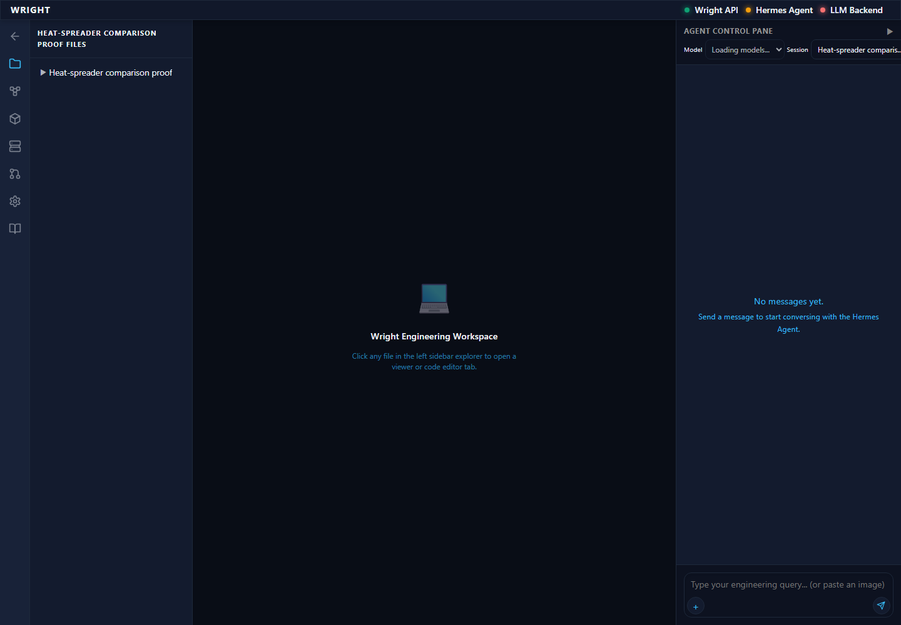
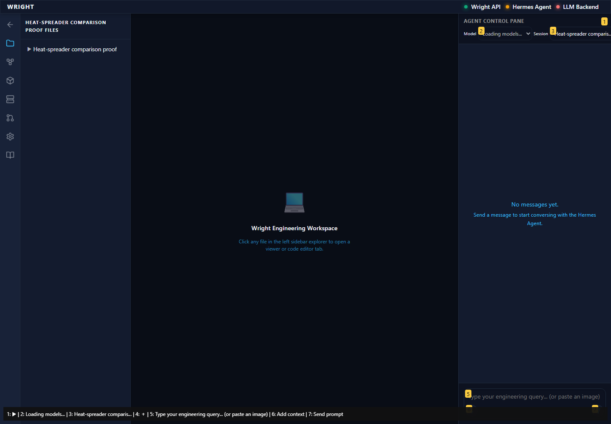
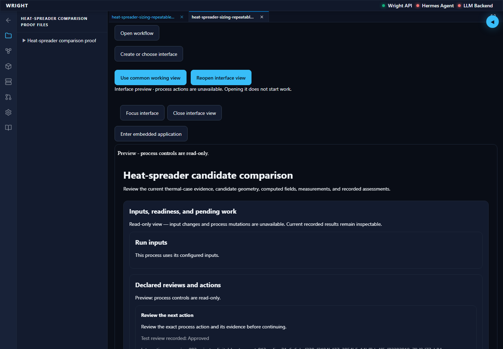
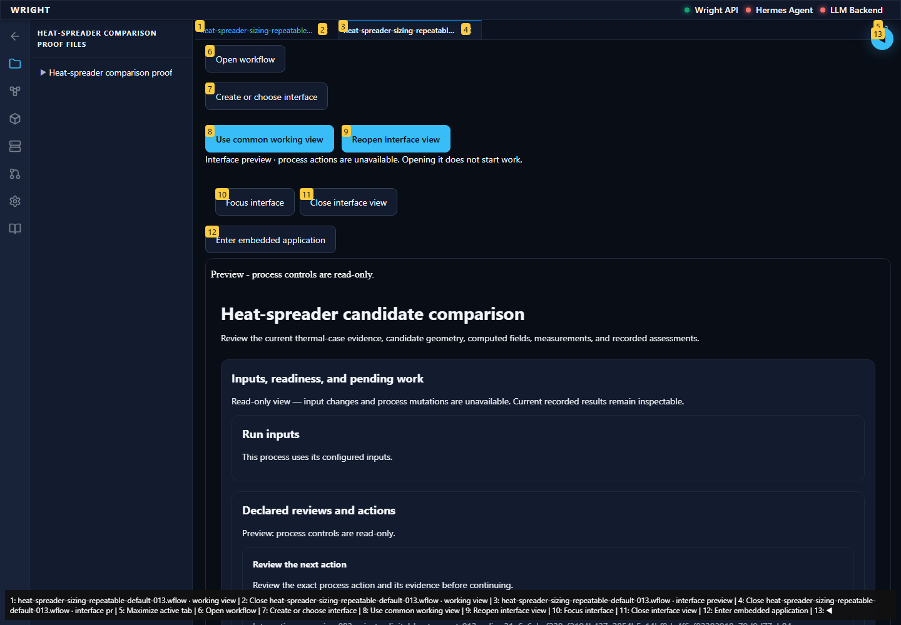
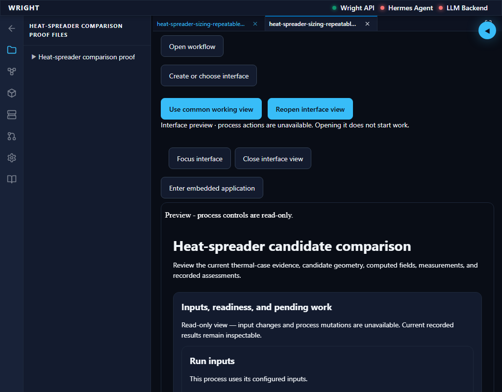
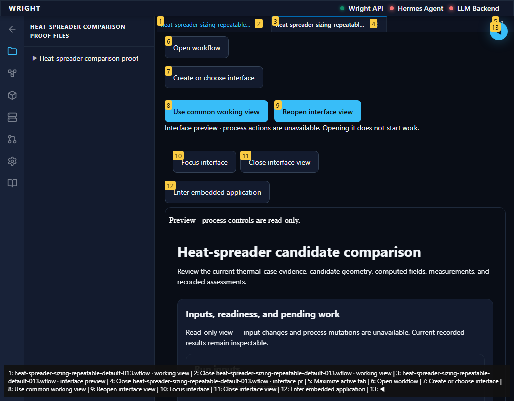
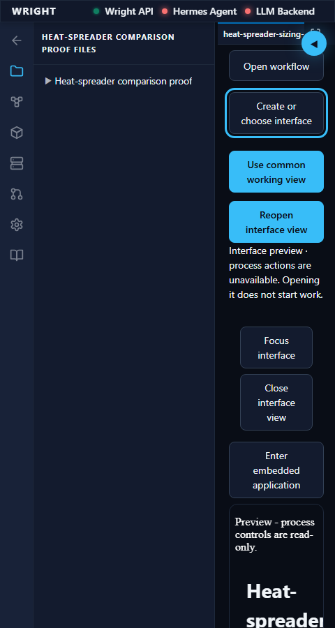
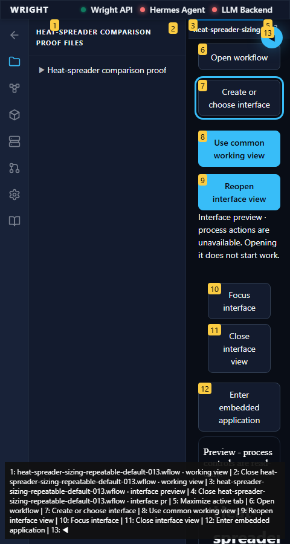
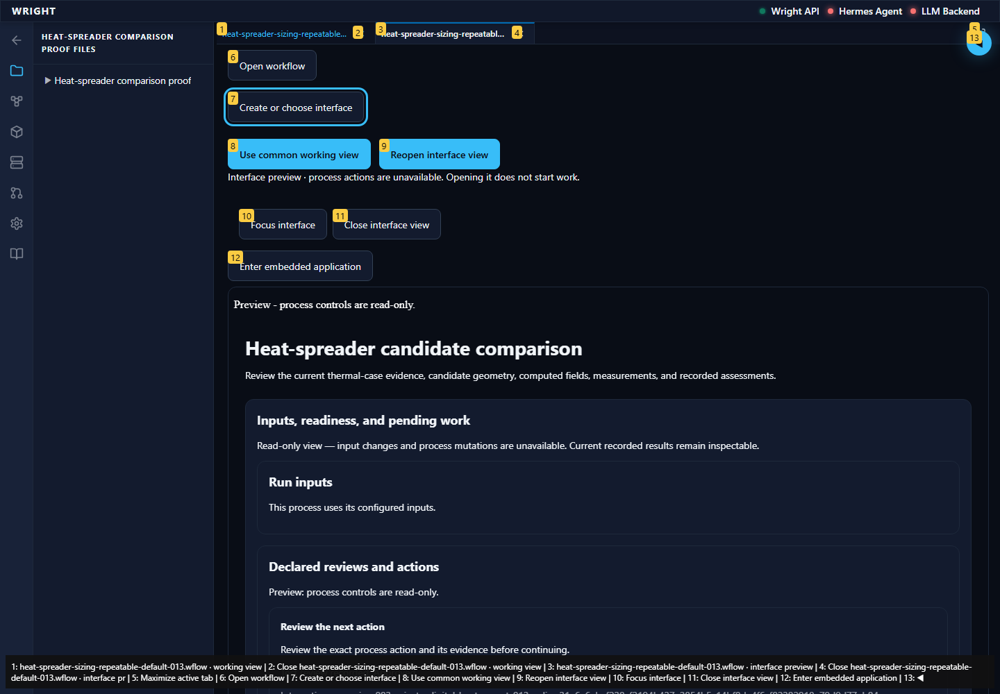
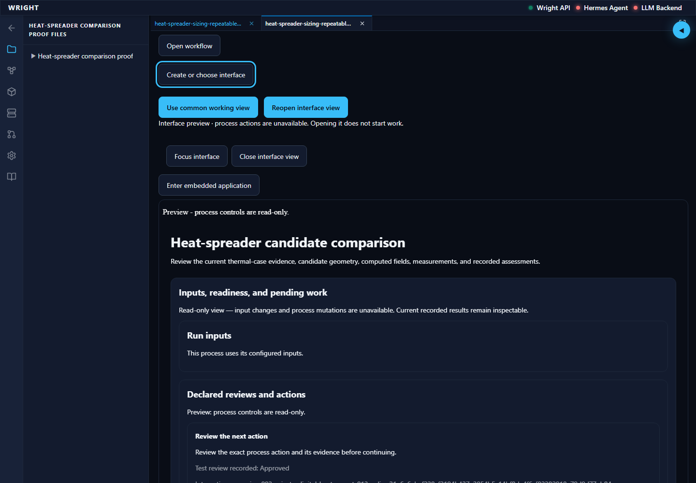

Normal Wright workspace and actual isolated engineering run. No mocked routes or physical action.
Status: blocked
The normal workspace opens on the same current installed package.
Expected: Normal workspace available.
Actual: Workflows is visible on the current installed host.
raw 
annotated 
The saved job preview renders the same exact engineering outputs without compiler/model availability.
Expected: Read-only preview and exact same eighteen result identities.
Actual: Preview banner, backend read-only context and exact engineering result parity verified.
raw 
annotated 
The preview and definition navigation remain available within the workspace.
Expected: No outer horizontal overflow and reachable definition navigation.
Actual: Current preview tab remains hosted with no outer horizontal overflow and visible Open workflow.
raw 
annotated 
Workspace preview controls remain reachable and keyboard focus stays visible.
Expected: No outer overflow and a visible focus ring on the next control.
Actual: No outer overflow; Create or choose interface receives Tab focus with a 3px outline.
raw 
annotated 
Workspace preview controls remain reachable and keyboard focus stays visible.
Expected: No outer overflow and a visible focus ring on the next control.
Actual: No outer overflow; Create or choose interface receives Tab focus with a 3px outline.
annotated 
Definition navigation remains reachable at measured page scale two.
Expected: Page scale two and reachable navigation.
Actual: visualViewport.scale is two and Open workflow remains visible.
raw 
The normal workspace entry did not meet the expected state.
Expected: Workspace and established editor available.
Actual: expect(received).toEqual(expected) // deep equality - Expected - 1 + Received + 3 - Array [] + Array [ + "/api/workspace/process-interfaces/authoring-jobs/job-1e03b43bc5664e6fa1d9fbea3a264299/preview", + ]